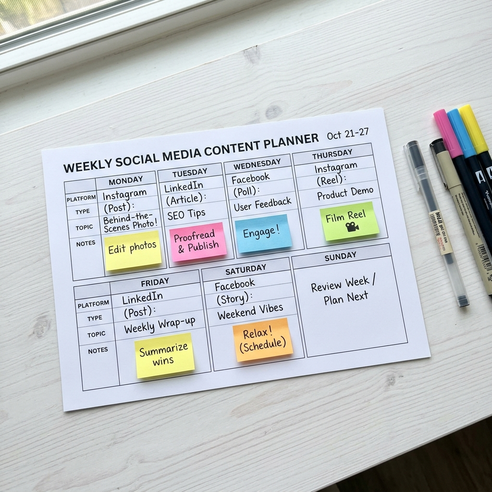

If you run a local business in Ahmedabad — whether it's a restaurant, clinic, gym, or retail shop — social media marketing is no longer optional in 2026. It's the single most powerful tool you have to reach new customers, build trust, and grow your revenue without spending lakhs on traditional advertising.
The numbers tell the story: over 500 million Indians are active on social media, and the average user spends more than 2.5 hours daily scrolling through Instagram, Facebook, and WhatsApp. Your customers are already on these platforms — the question is whether they're finding you or your competitor.
Why Social Media Is Critical for Local Businesses
Gone are the days when a billboard on Ashram Road or a newspaper ad in Gujarat Samachar was enough to fill your restaurant or clinic. Today's consumers — especially those under 40 — discover and evaluate businesses on social media before they ever walk through your door.
Here's what's changed in 2026:
- 76% of consumers check a business's Instagram profile before visiting for the first time
- Local hashtags like #AhmedabadFood, #AhmedabadDoctor, and #AhmedabadGym get millions of impressions monthly
- WhatsApp Business has become the primary communication channel between local businesses and customers
- Google Maps and Instagram are the new Yellow Pages — if you're not there, you don't exist
"We used to rely on word-of-mouth alone. After Loopy Media started managing our Instagram, we get 15–20 new patient inquiries every week through DMs alone." — Dr. Mehta, Dental Clinic, Satellite, Ahmedabad
The Three Platforms That Matter Most
1. Instagram — Your Digital Storefront
Instagram is the most powerful platform for local businesses in India right now. It's visual, it's local, and it's where your customers spend their time. For restaurants, it's where food photography drives cravings. For clinics, it's where patient testimonials build trust. For gyms, it's where transformation stories inspire sign-ups.
Key Instagram strategies for local businesses:
- Reels — Short, engaging videos that get 2x more reach than static posts. Show behind-the-scenes, quick tips, or customer stories
- Stories — Daily updates, polls, Q&As, and limited-time offers that keep your audience engaged
- Carousel posts — Educational content, before/after transformations, or menu highlights that encourage saves and shares
- Location tags & local hashtags — Every post should tag your location and use Ahmedabad-specific hashtags
2. Facebook — The Trust Builder
While Instagram captures attention, Facebook builds long-term community trust. A well-maintained Facebook Business Page with reviews, check-ins, and regular updates signals legitimacy. For businesses targeting customers aged 35+, Facebook remains incredibly effective.
Facebook's key advantages for local businesses:
- Reviews and ratings that influence booking decisions
- Facebook Groups for community building (e.g., a fitness challenge group for your gym)
- Event promotion for grand openings, health camps, or special offers
- Meta Ads integration — run hyper-targeted ads to people within 5 km of your business
3. WhatsApp Business — The Conversion Machine
WhatsApp isn't just a messaging app in India — it's a business tool. WhatsApp Business allows you to create a catalog, set up automated replies, and broadcast offers directly to customers' phones. The open rate on WhatsApp messages is over 95%, compared to just 20% for email.
💡 Pro Tip
Set up a WhatsApp Business profile with your address, hours, catalog, and automated greeting message. Add a "WhatsApp Us" button on your website and Instagram bio. This single step can increase customer inquiries by 40%.
Content Strategy: What to Post and When
Consistency is more important than perfection. Here's a content framework that works for local businesses:
- Monday — Motivational or behind-the-scenes content (humanize your brand)
- Tuesday — Tips or educational content (position yourself as an expert)
- Wednesday — Customer testimonial or review highlight
- Thursday — Product/service showcase (what you offer)
- Friday — Fun/trending content (join trending audio or memes)
- Saturday — Offer or promotion (drive weekend traffic)
- Sunday — Story-only day (polls, Q&As, casual updates)
The key is consistency over virality. Posting 3–4 times per week with high-quality visuals and clear messaging will always outperform sporadic viral attempts.

Building Community and Trust
Social media isn't just about broadcasting — it's about building relationships. The businesses that win on social media are the ones that engage genuinely with their audience.
- Reply to every comment and DM within 2 hours
- Share user-generated content — repost customer photos, stories, and reviews
- Go live — host Q&A sessions, cooking demos, workout sessions, or health talks
- Create a branded hashtag — encourage customers to tag you when they visit
- Show the faces behind the brand — introduce your team, share your journey, celebrate milestones
"People don't buy from businesses. They buy from people they trust. Social media is where you earn that trust — one post, one reply, one story at a time."
Real Results: Local Businesses in Ahmedabad
Here's what consistent social media marketing looks like in practice:
- Kapoor Kitchen (Restaurant) — Started with 300 Instagram followers. After 3 months of strategic content and local hashtag optimization, grew to 4,200 followers with DMs driving 25+ weekly table reservations
- Samata Hospital (Healthcare) — Professional social media presence with patient education content increased online appointment bookings by 180% in 60 days
- FitZone Gym (Fitness) — Transformation reels and member spotlights generated 50+ monthly membership inquiries through Instagram DMs alone
The ROI of Social Media Marketing
Let's talk numbers. With Loopy Media's Starter Social plan at ₹1,999/month, you get 8 professionally designed posts, captions, hashtag research, and monthly reporting. Compare that to traditional marketing:
- A single newspaper ad costs ₹15,000–₹50,000 and runs once
- A billboard costs ₹30,000–₹1,00,000/month with no tracking
- A radio spot costs ₹5,000–₹20,000 per airing
Social media marketing at ₹1,999/month gives you permanent, measurable, always-on visibility that compounds month after month. Every post, every follower, every review is an asset that continues working for you 24/7.
📊 The Math
If social media brings you just 5 extra customers per month at an average ticket of ₹1,000, that's ₹5,000 in new revenue — a 2.5x return on your ₹1,999 investment. Most businesses see much higher returns within 90 days.
How Loopy Media Can Help
At Loopy Media, we specialize in helping local businesses in Ahmedabad build a powerful social media presence that drives real business results. We don't just post pretty pictures — we create revenue-focused strategies backed by data and delivered with creative excellence.
Our social media plans start from just ₹1,999/month and include:
- Professional graphic design and content creation
- Strategic caption writing with SEO-optimized hashtags
- Monthly performance reports with actionable insights
- Dedicated account manager available on WhatsApp
- 48-hour content turnaround
Whether you're a restaurant looking to fill tables, a clinic looking to book appointments, or a gym looking to grow memberships — we've got a plan tailored for you.